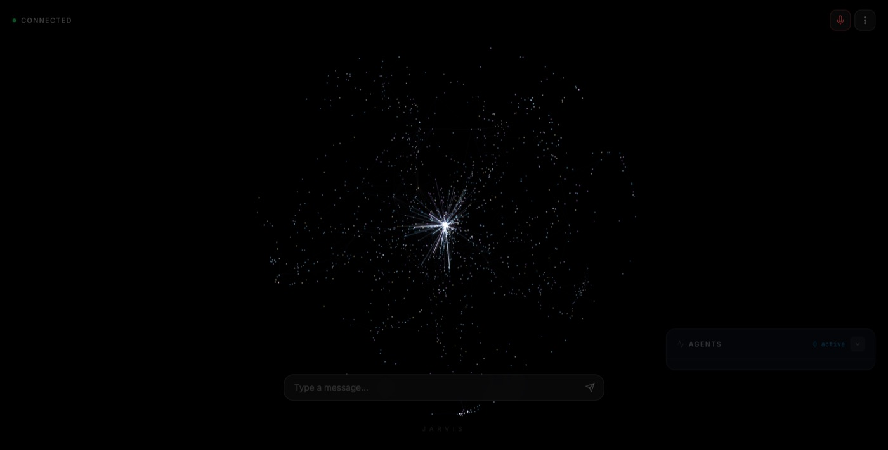
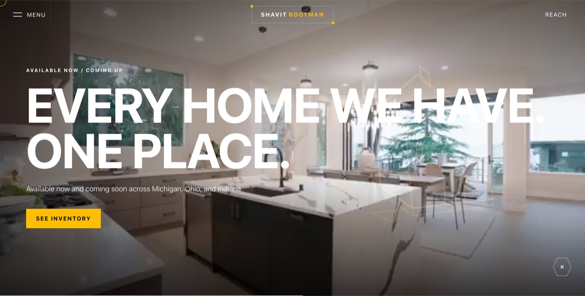
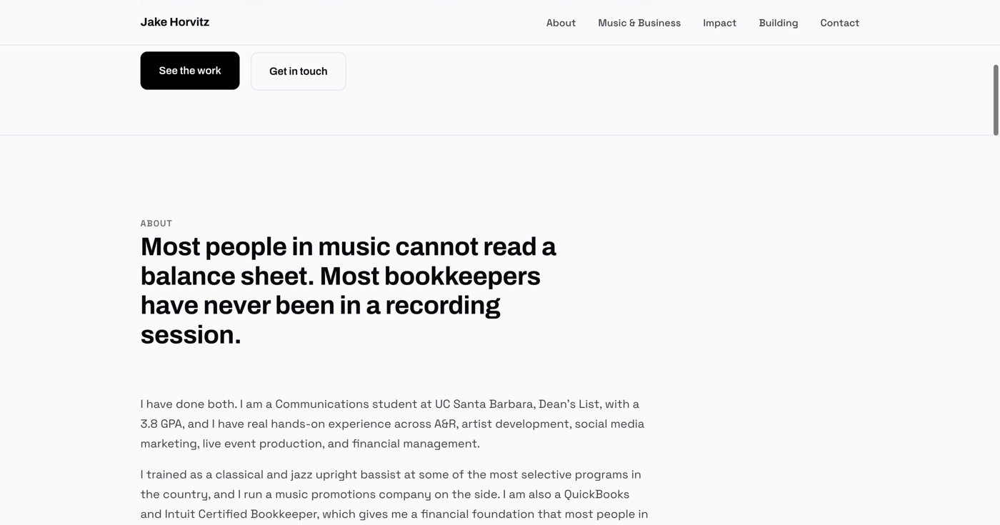

1st Chair, Bass
UCSB Jazz Ensemble, award-winning
Hold first chair in an award-winning collegiate jazz program while carrying a full Communications course load.
Communications student at UC Santa Barbara. A&R rep, artist manager, and event producer on one side. Self-taught AI-agent builder on the other. I use the second skill set to remove the busywork from the first.
I have done both. I am a Communications student at UC Santa Barbara, Dean's List, with a 3.8 GPA, and I have real hands-on experience across A&R, artist development, social media marketing, live event production, and financial management. I am also a QuickBooks and Intuit Certified Bookkeeper, which gives me a financial foundation that most people in creative industries do not have.
What ties all of it together is a habit I cannot turn off: when something is broken or slow, I fix it, and if the fix does not exist yet, I build it. That habit started in music. It is now the same habit I point at software.
I made first chair bass in the UCSB Jazz Ensemble as a freshman, and the head professor tore me down for it, called me names, made me feel small about the one thing I cared about most. So I quit, and instead of waiting for someone else to hand me a stage, I built my own.
I founded JHH Management, my own on-campus music promotions company. I book the bands, run the production, and give artists the platform and the respect I was denied. What started as me getting pushed out became me building something that pushes other people forward.
Six real, shipped products, ranging from a voice-first personal assistant to a CRM intelligence system. No engineering team behind any of them. Just me and Claude Code.

A voice-first AI assistant that runs locally, connects to calendar, mail, and notes, and can spawn its own coding agents to build and fix things on command.
Personal AI Infrastructure
A six-module hosted AI assistant built for a family business: a LinkedIn engine, multi-agent chat, a calendar advisor, and a recap-to-tracker pipeline, all behind one login.
Client AI Product
Marketing site plus the automation and analytics behind it, built for a real estate client. Turns scattered property and outreach data into something a small team can actually run on.
Marketing AutomationReads your past writing, builds a stylometric fingerprint of your actual voice, and forces every edit to obey it instead of drifting into generic AI phrasing. Closed-loop paraphrasing that only rewrites the sentences that need it.
Voice-Preserving EditingA HubSpot-based relationship-intelligence system for a sales intern program: maps warm-intro paths between prospects and existing contacts and surfaces the right next move. Illustration above uses sample data, not the live client CRM.
Sales & CRM Systems
A second real, shipped site: the portfolio built for my Claude Corps application, designed, built, tested, and deployed to GitHub Pages in one sitting.
Shipped With Claude CodeFor two years I have coached the West LA Special Olympics swim team. Positivity is my strongest trait, and I lean on it hard. I build the practice routines, I cheer like a maniac, and I push for the kind of camaraderie that makes a team actually want to win.
I am looking for opportunities in music business, A&R, artist management, or entertainment marketing, and I am always open to a conversation about where AI actually fits into creative industries.